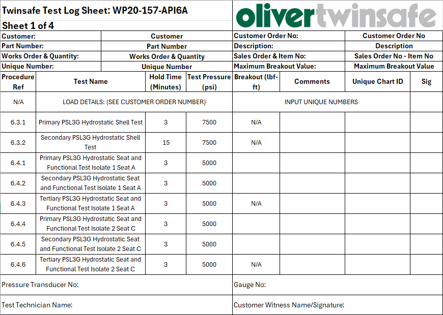
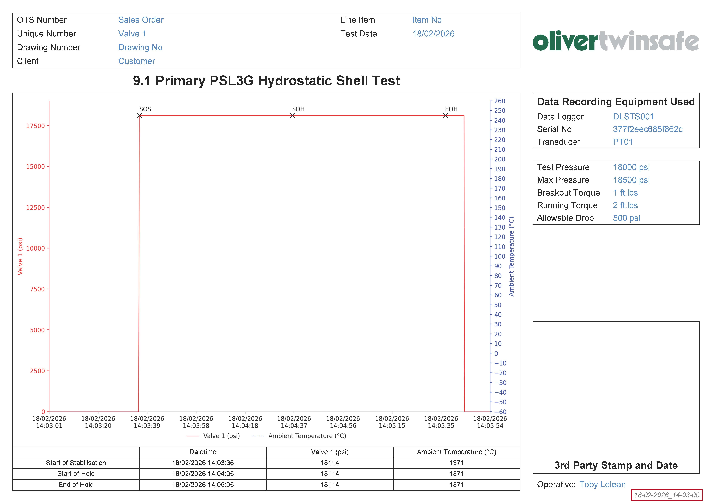
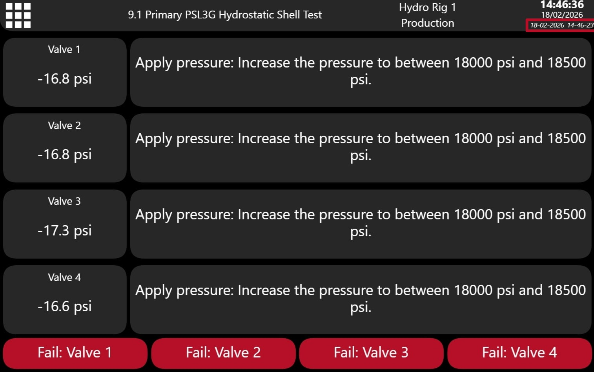

User Authentication
Test Details
Unique Numbers
Transducer Setup
Testing
Trend
Previous PDF
Finding Test Results
File Storage Location
All test data and generated PDF reports are automatically organized and stored on the shared network drive. Follow the below path to access the root directory:
How Files are Organized
The system follows a strict structure to ensure every test is easily traceable:
- 1. OTS Number: The top-level folder will be what you entered in the "OTS Number" field.
- 2. Item Number: The next folder is the item number you entered in the "Item Number" field.
- 3. Unique Number: The next folder splits the valves based on their unique numbers.
- 4. Data: The Data folder contains all raw CSV data and JSON metadata for each test run.
- 5. PDF: The PDF folder contains all generated PDF reports for each test run split between "Pass" and "Fail" subfolders.
The Batch Serial
All tests performed simultaneously are linked by a unique timestamp serial, such as 18-02-2026_14-03-00. This ensures that even if multiple valves are tested in one go, their results stay grouped together.
Example Directory Structure
Outcome Examples:
Test Log Sheet Example

Initial Setup & Synchronization
- • Load the Test Details and input Unique Numbers into the system. Ensure the details on the system match the details at the top of the log sheet exactly.
- • Always confirm that the Procedure Ref, Test Name, Hold Time, and Test Pressure for your test match the parameters shown in the start dialog.
During & After Test
- • Breakout (lbf-ft): Record your breakout value on both the physical log sheet and in the system's pop-up dialog at the end of the test.
- • Comments: Use this field for any quick notes or observations regarding the test run.
-
•
Unique Chart ID: This is the
dd-mm-yyyy_hh-mm-ssserial number generated at the start of the test. (See the Unique Chart ID tab for examples of where to find this and where it's referenced). - • Signature (Sig): Please initial the log sheet after the test is completed.
Final Checklist
Before finishing, ensure the following fields are also completed on the log sheet:
Unique Chart ID
The examples below show where to locate the Unique Chart ID, highlighted in red. Please record this ID on your test log sheet, as it can be used to quickly search for any files associated with this test. All chart and data file names automatically end with this Unique Chart ID (dd-mm-yyyy_hh-mm-ss).
Example on Chart

Example on DLS
